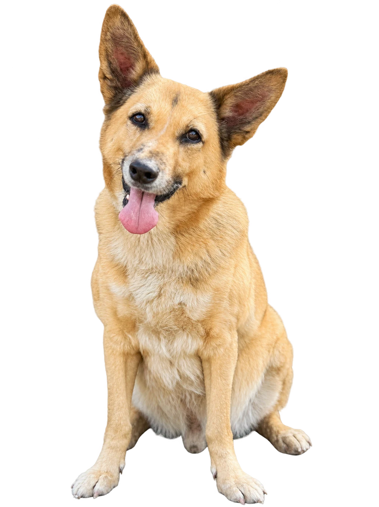

Познакомьтесь
с собаками Омского
муниципального
приюта
Они мечтают о хозяине.
Может, им сможете стать вы?

Все рядом
Знакомьтесь, наши собаки
Нажмите на фотографию,
чтобы узнать больше.
Загружаем каталог…
По выбранным параметрам собак не найдено
Попробуйте изменить параметры или поисковый запрос.
Не удалось загрузить каталог. Обновите страницу и проверьте соединение.
С заботой о каждом
Один каталог.
Много знакомых историй.
Здесь собраны фотографии и приметы собак. Поиск помогает найти карточку по кличке, номеру бирки или описанию внешности.
Отметка «Дома» означает, что в базе есть информация о переезде собаки. Если отметки нет, её нынешний статус может быть не указан.
Попробовать редактирование →